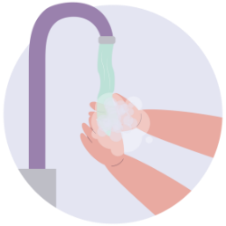
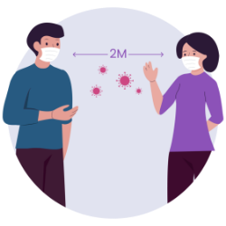
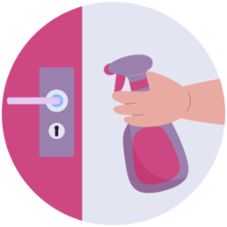

Virus Corona atau severe acute respiratory syndrome coronavirus 2 (SARS-CoV-2) adalah virus yang menyerang sistem pernapasan. Penyakit karena infeksi virus ini disebut COVID-19. Virus Corona bisa menyebabkan...
Virus Corona paling sering menyebar dari orang yang terinfeksi melalui:
Mencuci Tangan
Sering-seringlah mencuci tangan dengan sabun dan air setidaknya selama 20 detik
Hindari Menyentuh
Hindari menyentuh mata, hidung, atau mulut Anda, terutama dengan tangan yang tidak dicuci
Menjaga Jarak
Hindari kontak dekat dengan orang yang sakit
Menggunakan Masker
Gunakan masker untuk mengurangi penyebaran virus
Bersihkan dan Desinfektan
Bersihkan dan disinfeksi benda dan permukaan yang sering disentuh, seperti mainan, perangkat elektronik, dan gagang pintu
Dirumah Aja
Tetaplah di rumah jika Anda merasa kurang sehat untuk menghindari penyebaran.
Gejala awal infeksi virus Corona atau COVID-19 bisa menyerupai gejala flu, yaitu demam, pilek, batuk kering, sakit tenggorokan, dan sakit kepala. Setelah itu, gejala dapat hilang dan sembuh atau malah memberat. Penderita dengan gejala yang berat bisa mengalami demam tinggi, batuk berdahak bahkan berdarah, sesak napas, dan nyeri dada. Gejala-gejala tersebut muncul ketika tubuh bereaksi melawan virus Corona.
Batuk Kering
Demam (suhu di atas 38°C )
Sesak Napas
Positif
1.419.455
Sembuh
1.419.455
Meninggal
1.419.455
| Nama Rumah Sakit | Provinsi | Telepon | Alamat |
|---|---|---|---|
| RS Bhayangkara Tk. I R. Said Sukanto | DKI Jakarta | 021-8093288 | Jl. Raya Bogor, Kramat Jati, Kec. Kramat Jati, Kota Jakarta Timur, DKI Jakarta |
| RSPAD Gatot Soebroto | DKI Jakarta | 021-371008 | Jl. Abdul Rahman Saleh Raya No. 24, Senen, Kec. Senen, Kota Jakarta Pusat, DKI Jakarta |
| RSUP Persahabatan | DKI Jakarta | 021-22472222 | Jl. Persahabatan Raya No. 1, Pisangan Timur, Kec. Pulo Gadung, Kota Jakarta Timur, DKI Jakarta |